Sirius
Build diagram, table and tree editors in 20 minutes!
Mélanie Bats / Obeo
Your domain, your language, your representation
Each domain as its own specific vocabulary :
Business Process
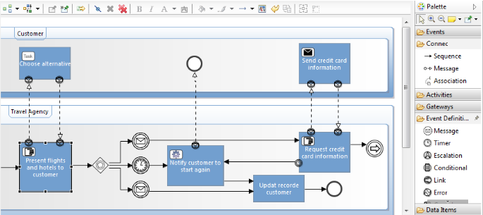
System engineering
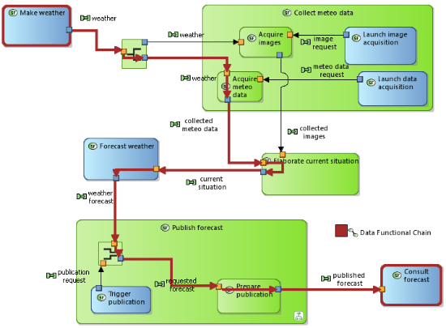
Software
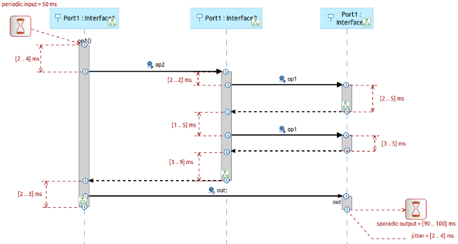
Safety
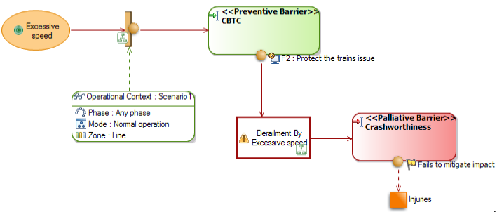
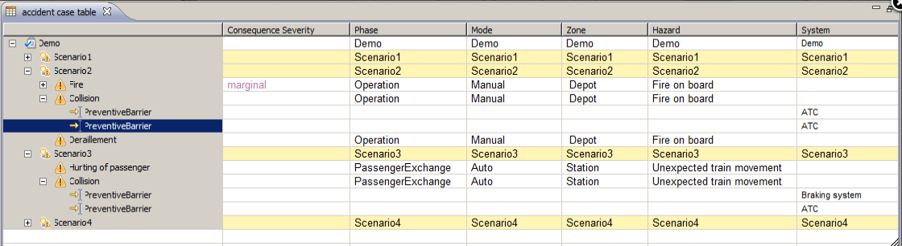
Domain Specific Language
Improve the communication
DSL based tools
- Are easy to take in hand
- Guide the user to the right way
A bit of history
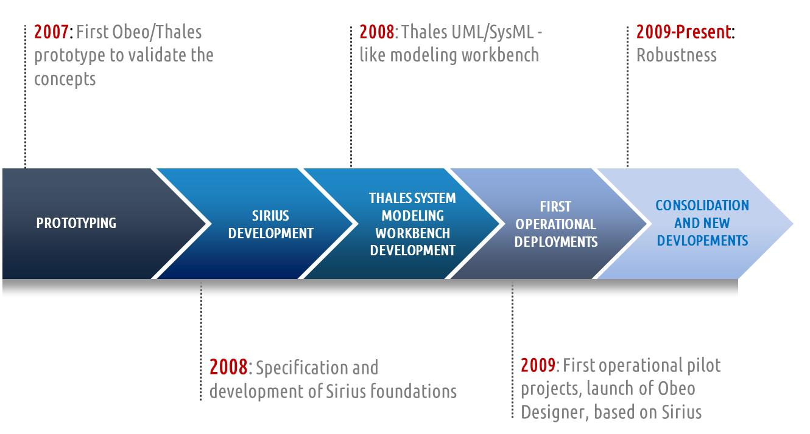
Thales previous experiences with UML profiling
- Poor adoption
- Metamodels constrained by UML concepts
- Representations constrained by existing UML diagrams
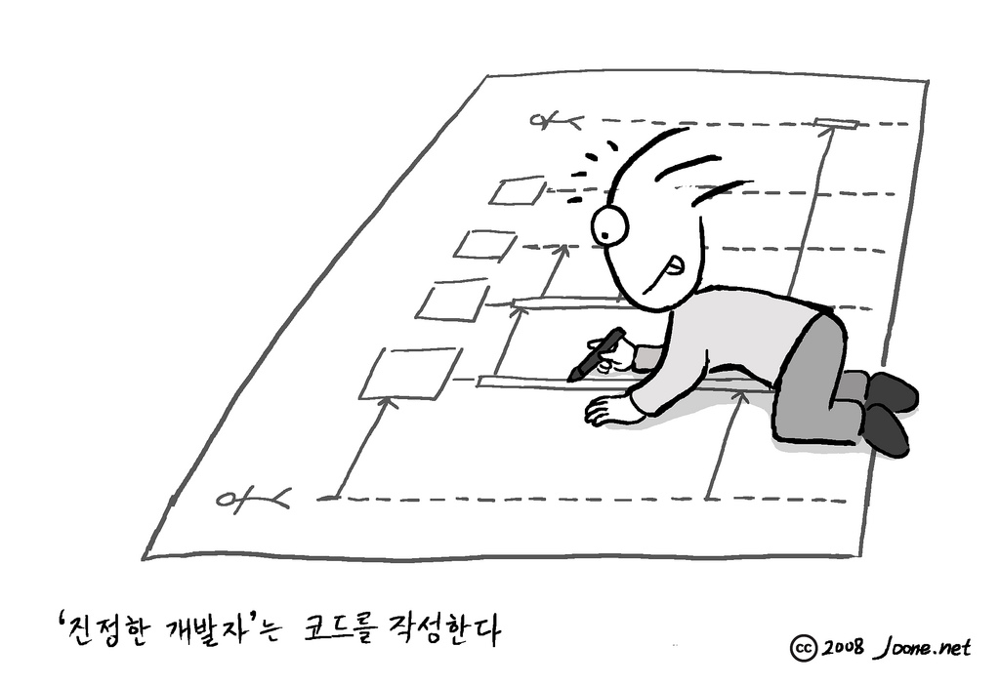
Needs for DSLs
- More freedom in representations
- Heavier and more technical developments
- Originally 2 or 3 foreseen modeling tools
Sirius in a nutshell
-
A tool to quickly define DSL based custom multi-view workbenches with dedicated representations
-
Based on Eclipse Modeling Technologies : no need to be an expert for most uses
-
New Eclipse Project : but already proven technology
Sirius goes open source
Released in 2013 as an official Eclipse project
What benefits
- For developers : reduce cost & complexity
- No need to be an Eclipse modeling expert
- Dynamic & iterative (live) development
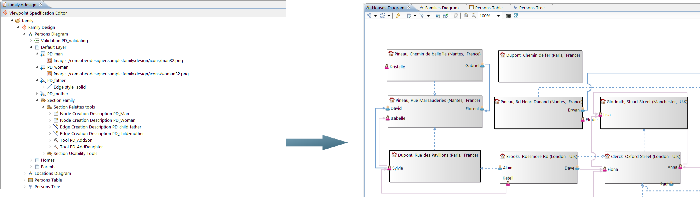
- For end-users :
- Tooling adapted to their needs and workflows
- Improved experience (compared to raw GMF)
Sirius in action
Eclipse 4.3 (Kepler)
Sirius 1.0.0 M7
What the customer wants

Two parts for two kinds of users
Specification Environment : Specifier/Developer
Runtime Environment : End-user
Specification Environment
- Define custom multi-view workbenches : Diagrams, Tree, Tables
- With little technical knowledge
- Get a working modeler fast : instant feedback
- Highly customizable : native tooling, Java or extension points
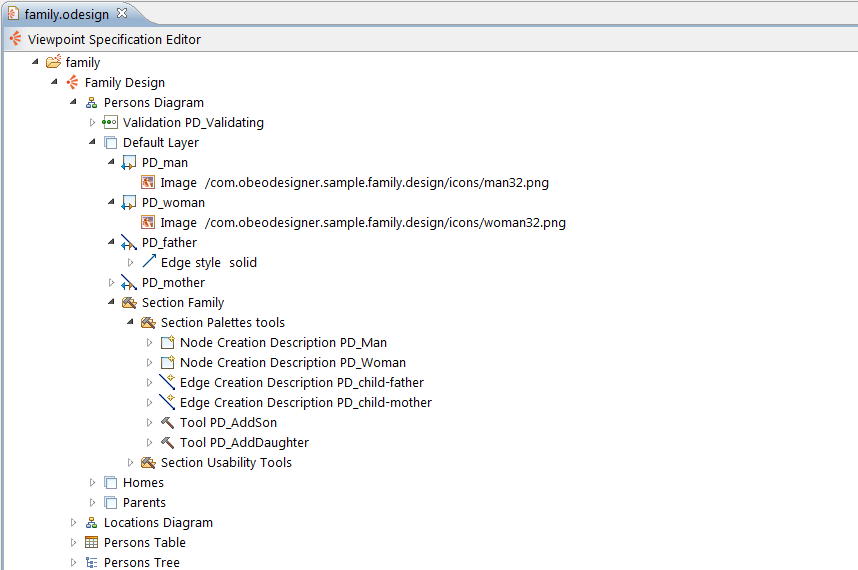
Runtime Environment
- Work with data models: not just a drawing tool
- Executes the specification : No code generation
- Environment adapted to user needs (Viewpoint-based)
- Viewpoint-based
- Simplified workflow : Modeling Project
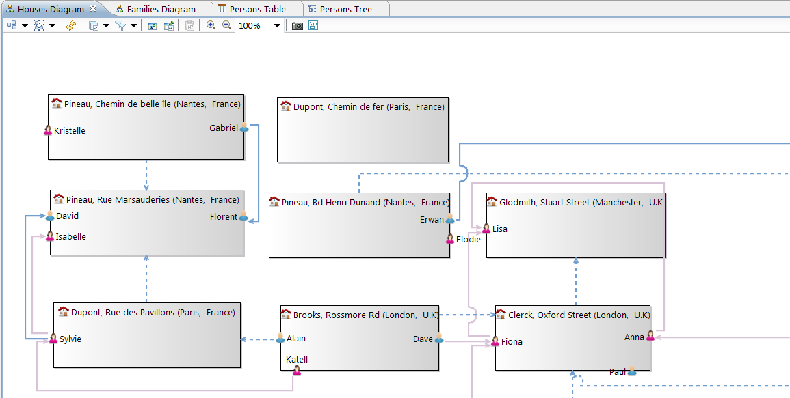
Who already uses Sirius ?
- Thales
- Embedded in Obeo Designer and Obeo SmartEA (proprietary) products for 4 years
- Open source modelers on Github and the Eclipse marketplace : UML, SysML, TOGAF...
- And now...you!
- Integration builds for v0.9 available now
- Version v1.0 planned for Eclipse 4.4 (Luna)
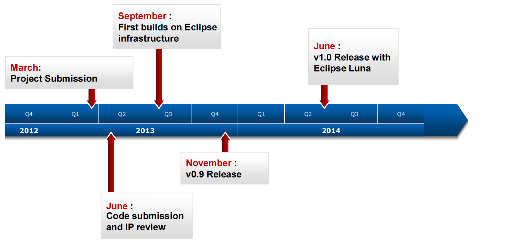
3 things to remember about Sirius
-
A full-featured environment to create custom modelers
- Easy to use
- Fast, iterative (live) development
-
Mature, many deployments
- Inside Thales and elsewhere via Obeo Designer
-
Official Eclipse project
- around 8 full-time commiters
- v1.0 soon in Luna